Petals Around the Rose: Approach Summary
Summary
| Approach | N Needed to Solve | Accuracy at N=20 | RMSE at N=20 | Max Accuracy |
|---|---|---|---|---|
| Naïve Linear Regression | - | 9.64% | 4.05 | 14.86% |
| LR With Categorical Features | 30 | 40.62% | 0.92 | 100.00% |
| Bincount Pivot | 6 | 100.00% | 0.00 | 100.00% |
| GAM | 100 | 15.55% | 3.35 | 100.00% |
| GB Tree | 200 | 9.43% | 4.08 | 100.00% |
| Neural Network | - | 9.88% | 4.31 | 90.44% |
| DeepSet | 5 | 100.00% | 0.16 | 100.00% |
Naïve Linear Regression
Min N for 100% Accuracy
-
Accuracy at N=20
9.64%
RMSE at N=20
4.05
Max Accuracy Achieved
14.86%
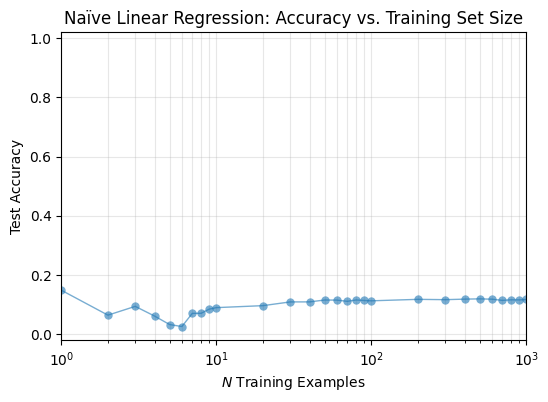
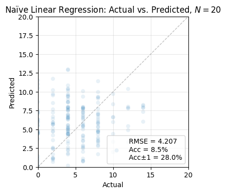
LR With Categorical Features
Min N for 100% Accuracy
30
Accuracy at N=20
40.62%
RMSE at N=20
0.92
Max Accuracy Achieved
100.00%
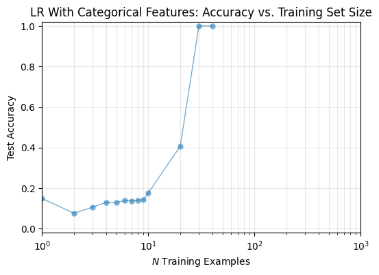
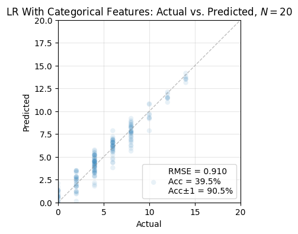
Bincount Pivot
Min N for 100% Accuracy
6
Accuracy at N=20
100.00%
RMSE at N=20
0.00
Max Accuracy Achieved
100.00%
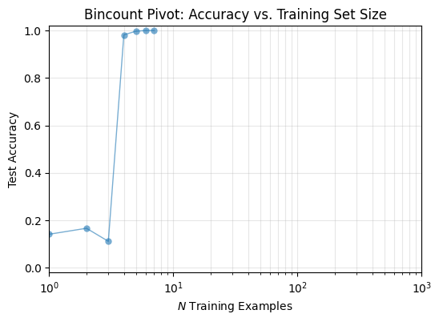
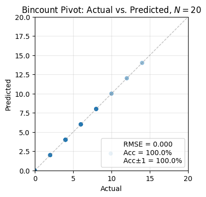
GAM
Min N for 100% Accuracy
100
Accuracy at N=20
15.55%
RMSE at N=20
3.35
Max Accuracy Achieved
100.00%
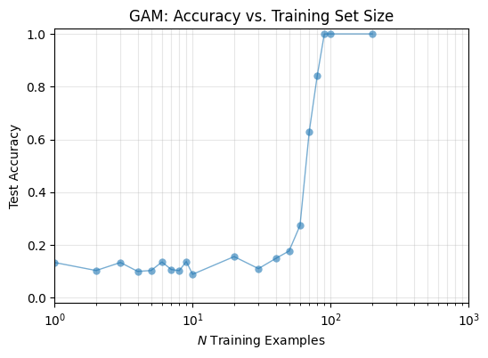
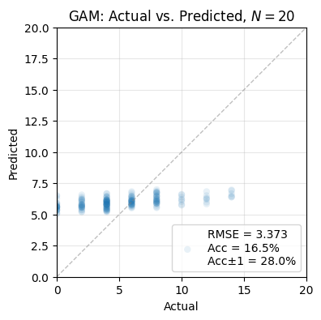
GB Tree
Min N for 100% Accuracy
200
Accuracy at N=20
9.43%
RMSE at N=20
4.08
Max Accuracy Achieved
100.00%
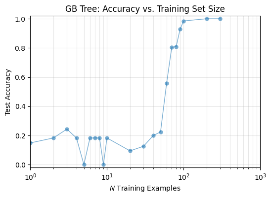
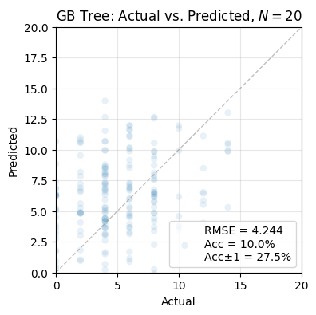
Neural Network
Min N for 100% Accuracy
-
Accuracy at N=20
9.88%
RMSE at N=20
4.31
Max Accuracy Achieved
90.44%
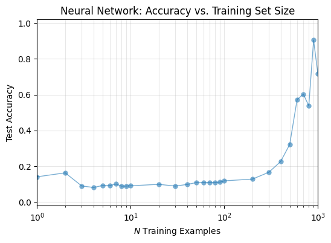
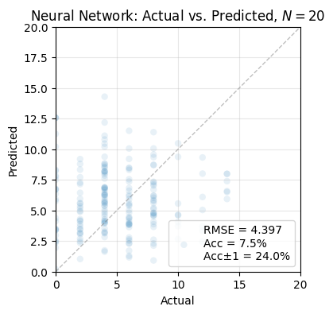
DeepSet
Min N for 100% Accuracy
5
Accuracy at N=20
100.00%
RMSE at N=20
0.16
Max Accuracy Achieved
100.00%
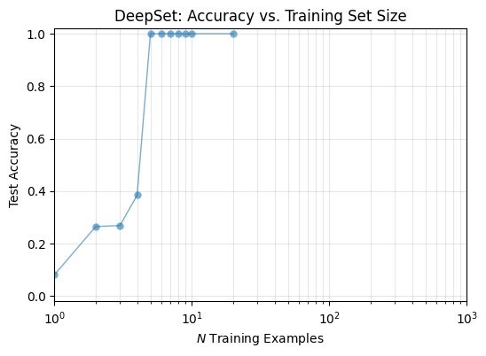
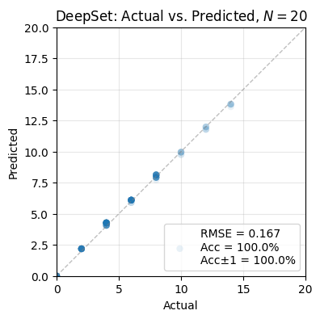